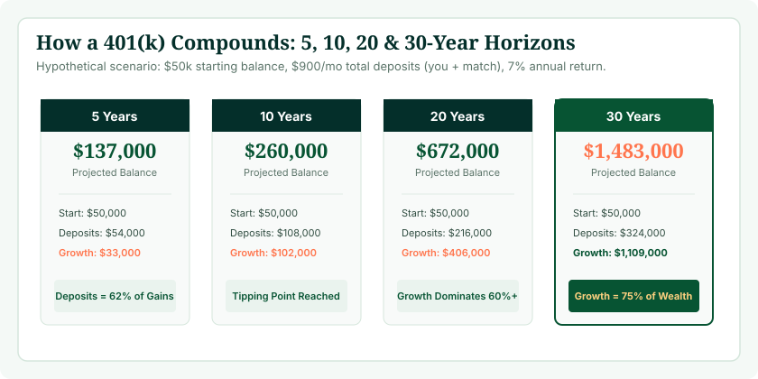
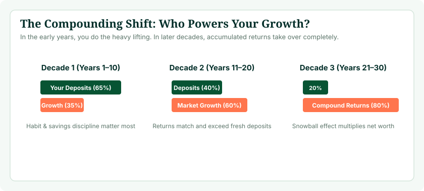

How much can a 401(k) grow over 5, 10, 20 or 30 years? The answer depends on far more than just your starting balance. Your ongoing personal contributions, employer matching, investment returns, and the amount of time your money remains invested interact in compounding waves to determine your eventual nest egg. Even modest differences in your monthly savings rate or annual return percentage compound into hundreds of thousands of dollars over multi-decade horizons.
To calculate how your specific retirement balance could evolve across these exact milestones, use our interactive 401(k) Calculator. By testing your current age, salary, deferral percentage, and employer match formula, you can generate personalized year-by-year projections instead of guessing based on static rules of thumb.
Quick Answer: The Four Phases of 401(k) Compounding
- 5 Years (Foundation Phase): Your growth is dominated almost entirely by direct payroll contributions and employer matching. Compounding has barely begun.
- 10 Years (Momentum Phase): Investment returns begin generating meaningful growth, accounting for approximately 25% to 35% of total account value.
- 20 Years (Tipping Point): Cumulative investment gains officially surpass your total out-of-pocket contributions. Market returns do more heavy lifting than your payroll deductions.
- 30 Years (Exponential Harvest): Compound returns dominate the balance, accounting for 65% to 75% or more of your multi-million-dollar portfolio.

401(k) Growth in 5 Years: The Contribution-Dominated Phase
Over a short 5-year investment horizon, your 401(k) balance is almost completely determined by the amount of cash you and your employer deposit into the plan. Market returns simply have not had sufficient duration to compound upon themselves.
Consider an employee earning $75,000 who contributes 8% ($6,000/year) and receives a 3% employer match ($2,250/year), totaling $8,250 per year ($687.50 per month). Assuming a starting balance of $0 and a hypothetical 7% annualized return:
- Total Out-of-Pocket Deposits: $30,000 (employee) + $11,250 (employer) = $41,250
- Compound Investment Returns: ~$6,100
- Ending Balance after 5 Years: ~$47,350
In this 5-year scenario, contributions account for 87% of the total balance, while investment earnings account for just 13%. During your first five years, you should not be discouraged if market fluctuations feel more noticeable than compound interest. Your primary task during this phase is maximizing your savings rate and securing every dollar of employer matching.
401(k) Growth in 10 Years: The Inflection Point
By year 10, compound interest begins to take visible root. Instead of earning returns solely on your principal deposits, you are now earning returns on the prior nine years of accumulated investment returns.
Continuing the same $8,250 annual contribution ($687.50/month) at a 7% average return:
- Total Contributions (Years 1–10): $82,500
- Cumulative Investment Earnings: ~$39,400
- Ending Balance after 10 Years: ~$121,900
Between year 5 and year 10, the portfolio grew by $74,550—even though only $41,250 of new deposits were added. Investment gains now represent nearly one-third of the total portfolio value. At this juncture, market returns produce over $8,500 per year—matching your annual employee deposits.
401(k) Growth in 20 Years: The Tipping Point
At the 20-year mark, your 401(k) experiences a major structural milestone: investment earnings surpass your total cumulative deposits. The portfolio generates more internal wealth than you could reasonably save out of your salary.
Assuming the same $8,250 annual savings rate at 7%:
- Total Contributions (Years 1–20): $165,000
- Cumulative Investment Earnings: ~$196,800
- Ending Balance after 20 Years: ~$361,800
In year 20 alone, a 7% return on a $338,000 portfolio produces roughly $23,600 in annual market growth—nearly three times your annual savings deposit. This is the stage where the compounding engine becomes self-propelling.

401(k) Growth in 30 Years: The Full-Career Horizon
Over a full 30-year career horizon (e.g., from age 35 to 65), the exponential nature of compounding reaches full fruition. What began as a modest monthly payroll deduction transforms into a substantial, multi-million-dollar retirement nest egg.
Using the same consistent $8,250 annual contribution ($687.50/month) at 7%:
- Total Contributions (Years 1–30): $247,500
- Cumulative Investment Earnings: ~$586,300
- Ending Balance after 30 Years: ~$833,800
If the worker started with just $20,000 already saved at year zero, that same 30-year horizon at 7% pushes the final balance to ~$986,000. Over 70% of the final nest egg is pure investment return, illustrating why time in the market is the ultimate financial equalizer.
Comparison Table: 5-Year vs. 10-Year vs. 20-Year vs. 30-Year Growth
The table below compares how an illustrative $10,000 annual contribution ($833/month, combining employee and employer dollars) performs across different starting balances and timeframes at a moderate 7% annual return:
| Starting Balance | 5 Years | 10 Years | 20 Years | 30 Years |
|---|---|---|---|---|
| $0 Starting | $57,400 | $147,800 | $438,600 | $1,010,700 |
| $25,000 Starting | $92,500 | $197,000 | $535,300 | $1,201,000 |
| $50,000 Starting | $127,500 | $246,200 | $632,100 | $1,391,200 |
| $100,000 Starting | $197,600 | $344,600 | $825,600 | $1,771,700 |
401(k) Growth Scenario Matrix: 5%, 7%, and 9% Returns
Because market returns are never fixed or guaranteed, financial analysts test multiple return scenarios. The table below illustrates how a starting balance of $50,000 with a $12,000 annual contribution evolves across conservative (5%), moderate (7%), and aggressive (9%) average market outcomes:
| Time Horizon | Conservative (5% Return) | Moderate (7% Return) | Aggressive (9% Return) |
|---|---|---|---|
| 5 Years | $130,100 | $139,100 | $148,800 |
| 10 Years | $232,300 | $263,900 | $300,500 |
| 20 Years | $529,800 | $686,100 | $897,400 |
| 30 Years | $1,014,900 | $1,514,900 | $2,308,400 |
Test Your Own Growth Assumptions
Adjust your starting balance, expected return, and annual savings rate to see custom projections across 5 to 30 years.
Open 401(k) Calculator →How Contribution Rates Alter Multi-Decade Horizons
While you cannot control the Federal Reserve, corporate earnings, or global stock market returns, you have total control over your contribution percentage. Increasing your savings rate from 6% to 12% permanently shifts your compounding baseline.
On an $80,000 salary over 25 years at a 7% return:
- 6% Contribution ($4,800/yr): Yields ~$303,600 at retirement.
- 10% Contribution ($8,000/yr): Yields ~$506,000 at retirement.
- 15% Contribution ($12,000/yr): Yields ~$759,000 at retirement.
- 20% Contribution ($16,000/yr): Yields ~$1,012,000 at retirement.
Every additional percentage point diverted into your 401(k) buys future financial independence. For deeper analysis on calibrating your savings rate, read our guide on how much you should contribute to your 401(k).
The Power of Employer Matching Across 3 Decades
Employer matching is often referred to as “free money,” but over long horizons, it is more accurately described as an endowment multiplier. In our dedicated guide to the 401(k) calculator with employer match, we demonstrate how company contributions compound quietly in the background.
A worker who earns an average of $80,000 and receives a standard 50% match up to 6% (a 3% company contribution, or $2,400 per year) receives $72,000 in direct employer money over 30 years. Compounded at 7% per year, that company match grows into over $242,000 at retirement. Failing to contribute enough to claim your full match is equivalent to walking away from a quarter-million-dollar gift from your employer.
Does a 401(k) Double Every 10 Years? The Rule of 72 Explained
A frequent rule of thumb in personal finance is that your investment portfolio doubles every decade. Is this mathematically true?
The answer is explained by the Rule of 72, a mental math shortcut used to estimate the number of years required to double an investment at a fixed annual rate of return:
Years to Double ≈ 72 ÷ Annual Return Rate (%)
- At a 6.0% return: 72 ÷ 6 = 12 years to double.
- At a 7.2% return: 72 ÷ 7.2 = 10 years to double.
- At a 9.0% return: 72 ÷ 9 = 8 years to double.
- At a 10.0% return: 72 ÷ 10 = 7.2 years to double.
If your portfolio achieves an annualized return near 7.2%, an existing balance of $100,000 will indeed double to $200,000 in 10 years, $400,000 in 20 years, and $800,000 in 30 years—even if you never contribute another single penny. When you combine this natural doubling power with regular monthly payroll deposits, account growth accelerates even faster.

Starting Balance vs. Regular Contributions: Which Matters More When?
A common debate among investors is whether having a large starting balance or making high regular contributions matters more. The answer depends entirely on your time horizon:
- Years 1 to 5: Regular monthly contributions matter vastly more. A large starting balance helps, but continuing to pour cash into the account provides the bulk of short-term progress.
- Years 6 to 15: Both factors contribute roughly equally. The balance is large enough that market swings are noticeable, but fresh cash injections still represent significant percentages of the total.
- Years 16 to 30+: Your starting balance and the duration it has compounded completely dominate. Fresh contributions represent only a fraction of the portfolio's annual market return.
The Impact of Inflation on Real vs. Nominal 401(k) Growth
When running projections, it is crucial to understand the distinction between nominal growth and real purchasing power:
- Nominal Balance: The actual dollar figure that will appear on your account statement in the year 2046 or 2056.
- Real (Inflation-Adjusted) Balance: The purchasing power of that future money measured in today's dollars.
Assuming an average historical inflation rate of 2.8%, consumer prices double roughly every 25 years. If your 401(k) grows to $1,500,000 after 30 years of 7% nominal returns, its purchasing power will be equivalent to roughly $650,000 in today's money. To calculate real wealth accumulation, subtract inflation from your expected return: an 8% nominal return minus 3% inflation yields a 5% real rate of return. Read our detailed analysis on what rate of return to use in your 401(k) calculator for a complete breakdown of inflation modeling.
Sequence of Returns Risk Across Horizons
Calculators use steady annualized returns (e.g., 7% every year) to illustrate mathematical trajectory. In the real world, the stock market never delivers a steady 7% return. Over a 20-year span, your portfolio might experience years with +28%, -18%, +14%, +3%, and -8% returns.
During the accumulation phase (years 1 to 25), market volatility actually works in your favor through dollar-cost averaging. When the market drops, your regular monthly contributions buy more fund shares at cheaper prices. However, as you approach retirement (years 25 to 30), a severe market drop right before you begin withdrawals can significantly harm your portfolio longevity—a phenomenon known as sequence of returns risk. As your time horizon narrows, gradually shifting a portion of your portfolio into fixed income and short-term capital preservation helps protect accumulated gains.
Common 401(k) Growth Mistakes to Avoid
- Expecting smooth annual gains: Markets move in cycles. Do not panic and sell equities during a downturn.
- Cashing out during job transitions: Taking a cash distribution when changing employers incurs taxes, a 10% penalty, and permanently destroys the compounding chain.
- Pausing contributions during bear markets: Pausing 401(k) deposits during a downturn deprives you of buying assets at generational discounts.
- Over-allocating to low-yield cash instruments: Keeping your 401(k) in a money market fund for 20 years ensures that inflation will destroy your purchasing power.
- Ignoring fund expense ratios: Paying 0.85% in management fees instead of 0.05% reduces your 30-year ending balance by over 15%.
- Treating 10-year projections as guarantees: Use financial projections as navigational guides, adjusting your plan every two to three years.
Frequently Asked Questions
How much can a 401(k) grow in 5 years?
In 5 years, growth is driven primarily by contributions. A worker saving $8,000 annually with an employer match at 7% return typically accumulates around $47,000 to $53,000, with over 80% coming from deposits.
How much can a 401(k) grow in 10 years?
Over 10 years, compound interest begins producing meaningful gains. A $10,000 annual contribution at 7% grows to ~$147,800, with investment returns accounting for roughly one-third of the total portfolio.
How much can a 401(k) grow in 20 years?
At 20 years, investment returns officially surpass total deposits. Saving $10,000 annually at 7% yields ~$438,600, where $238,600 (54%) is pure compound growth and only $200,000 comes from contributions.
How much can a 401(k) grow in 30 years?
Over a full 30-year career, compounding dominates the portfolio. An ongoing $10,000 annual contribution at 7% return produces ~$1,010,700, with compound interest providing over 70% of the ending balance.
Does a 401(k) double every 10 years?
Under the Rule of 72, an investment doubles in roughly 72 ÷ Return Rate years. At a 7.2% annual return, an existing balance doubles every 10 years without adding new contributions.
What rate of return should I use for a 401(k) projection?
Financial planners recommend testing 5% (conservative), 7% (moderate), and 9% (aggressive) nominal returns to understand the sensitivity of your savings plan.
Which matters more: my starting balance or regular contributions?
Over 5 to 10 years, regular contributions matter vastly more. Over 20 to 30 years, the time your starting balance spends compounding in the market becomes the primary growth driver.
How does an employer match impact multi-decade growth?
A 3% company match on an $80,000 salary ($2,400/yr) compounded at 7% over 30 years adds over $242,000 to your retirement portfolio at zero out-of-pocket cost.
How does inflation affect long-term 401(k) growth?
Assuming 2.8% historical inflation, money's purchasing power roughly halves every 25 years. A nominal $1,000,000 in 30 years equals roughly $435,000 in today's purchasing power.
Can market downturns erase 20 years of 401(k) growth?
No. While downturns reduce short-term values, broad diversified markets historically recover. Continuing to dollar-cost average during downturns accelerates long-term recovery.
How can I estimate my own 401(k) growth?
Use our interactive 401(k) Calculator to test your exact salary, contribution percentage, current balance, and expected return across 5 to 30 years.